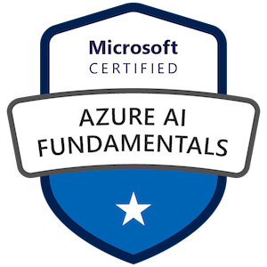
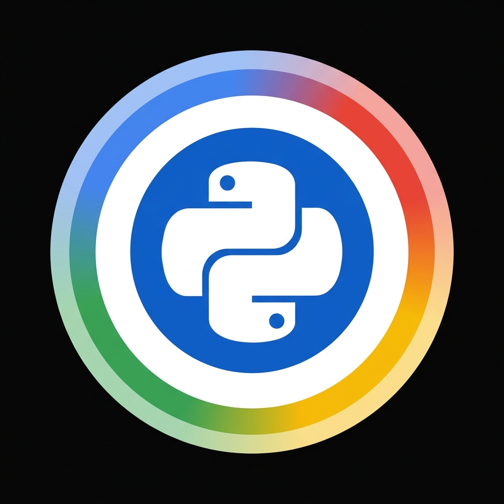
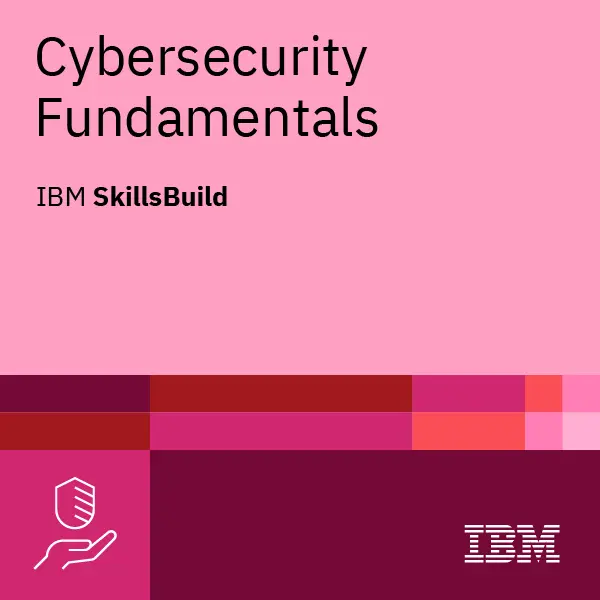
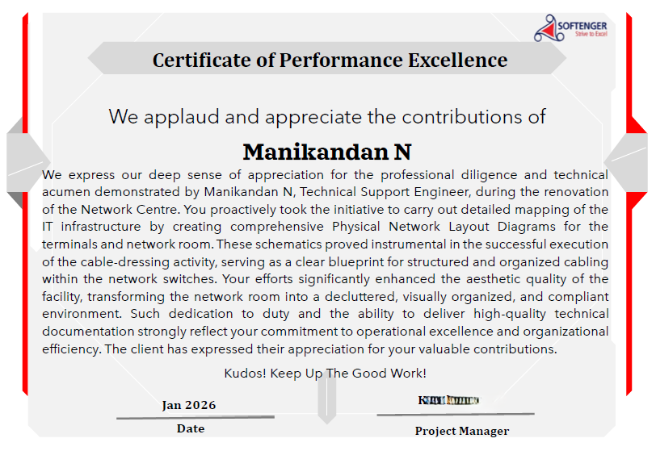
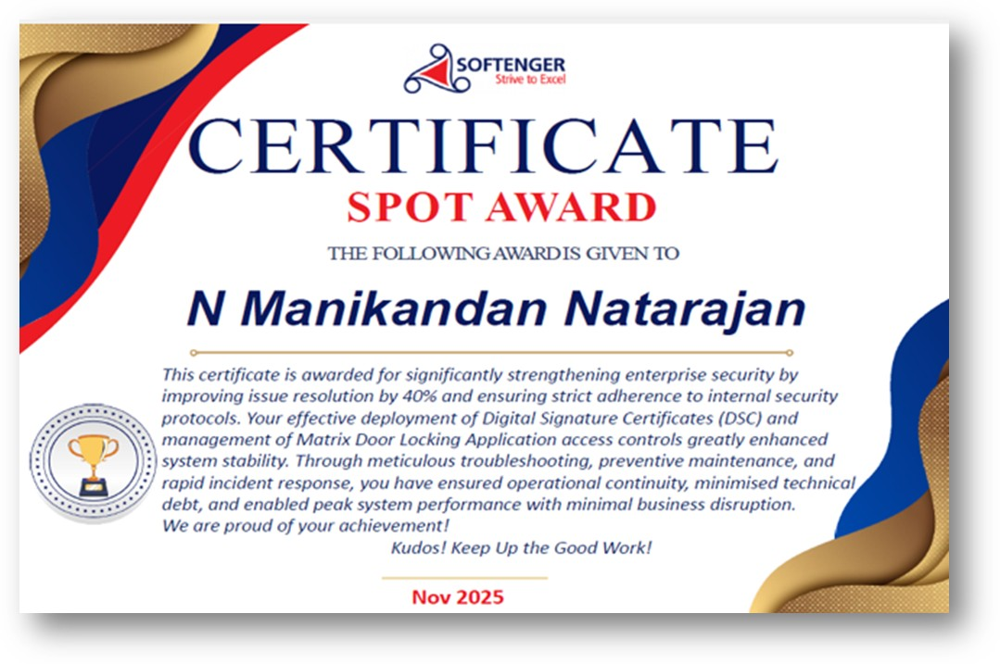

Certifications & Education
Professional credentials & academic foundation

Azure Administrator Associate
Microsoft Certified — AZ-104

Azure Fundamentals
Microsoft Certified — AZ-900

Azure AI Fundamentals
Microsoft Certified — AI-900

Crash Course on Python
Google / Coursera — Python
Python for OS Interaction
Google / Coursera — Linux & Windows automation scripting using Python
B.E. Electronics & Communication
Anna University — CGPA: 7.60
Digital Badges & Training

Cloud Quest: Cloud Practitioner
AWS
AWS Educate Cloud Computing 101
AWS

Information Technology Fundamentals
IBM SkillsBuild

Cybersecurity Fundamentals
IBM SkillsBuild
AI Enthusiast
Exploring the frontiers of artificial intelligence & creative automation
Interactive IT Troubleshooting Decision Tree Builder Website
Built a webapp TroubleshootFlow using Lovable.dev Application that bridges the gap of static technical documentations and simple, frontline execution
LovableBilingual Web App
Built a mobile-friendly webapp using Replit in bilingual format, demonstrating rapid full-stack prototyping with AI-assisted development.
ReplitAI Job Application Co-Pilot
Built an app using Lovable for optimising resume based on the job description, demonstrating rapid App prototyping with AI-assisted development.
LovableNotebookLM Power User
Leverage Google NotebookLM for creating podcasts, presentations, mind maps, videos, and images — transforming research into multi-format content.
NotebookLMAI Creative Suite
Created images, videos, and avatars with Magnific.com using multiple AI agents — pushing the boundaries of AI-driven visual creativity.
MagnificMulti-AgentAI Song Creation
Utilized Suno App for AI-powered song creation, with tracks published on BandLab — blending technology with musical artistry.
SunoBandLabVoice-Enabled Interview Coach
Created a voice-enabled AI agent on ElevenLabs.io functioning as a personalized interview coach with natural conversation capabilities.
ElevenLabsAI Clone Video Production
Produced professional videos using an AI-cloned voice and face on HeyGen.com — demonstrating cutting-edge digital twin technology.
HeyGenShort Video Mix Creation
Used Viggle AI for creating short-form videos with templates and personal avatar integration for dynamic content production.
Viggle AIAI-Powered Problem Solving
Strategically use Claude, Gemini AI, Google Antigravity and ChatGPT for research and resolving complex technical issues in my professional role — without violating client security policies.
ClaudeGeminiChatGPTAwards & Recognition
Acknowledged for exceptional performance

Letter of Appreciation
UIDAI Project
Received Official Appreciation Letter from Deputy Director (UIDAI) for outstanding support contributions toward extended support and critical digital infrastructure project.

Spot Award
Softenger
Recognized for accelerating average incident resolution efficiency by 40% while maintaining absolute compliance with security baselines.

Performance Excellence Award
Softenger
Recognized for performance diligence and technical acumen.
Client Appreciations
Kotak Mahindra Bank Project
Awarded multiple commendations from enterprise clients for delivering elite, rapid-response end-user support that mitigated severe business productivity halts.
Get In Touch
Let's connect and explore opportunities
Location
Bengaluru, Karnataka, India